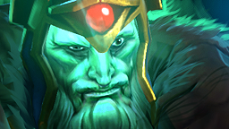

Если распознавание ошиблось, можно указать героев. Ручная поправка имеет приоритет.
Поправить оценку
Оценка учитывает наблюдения игры. Эта поправка нужна только при ошибке.
БИЛД КЕРРИ
Проверка источника
ПРОВЕРКА ИСТОЧНИКА

ПОДДЕРЖИВАЕМЫЙ ГЕРОЙ / CARRY
ТВОЙ ГЕРОЙ
Wraith King
Уровень —/—:—/— золота
Ожидаю подключениеGSI · 127.0.0.1:43829
СЛЕДУЮЩИЙ ПРЕДМЕТ—
◇
Ожидаю данные матча
Подключи Dota 2 через GSI
Помощник учтёт текущую закупку, время матча и известный состав противников.
Источник билдов · статистика + правила
СЕЙЧАС НА КАРТЕ↗
Ожидаю Wraith King
Запусти матч или включи деморежим, чтобы посмотреть интерфейс.
Анализ экрана готов к запуску
Позиции противников учитываются только при уверенном распознавании.
МАТЧАП
Кого нужно учитывать
Состав будет распознан с верхней панели.
Ctrl + Alt + O показать оверлейCtrl + Alt + M переместить
ПОРЯДОК ПРОКАЧКИ
Навыки выбранного билда
ПЛАН
?
СЛЕДУЮЩИЙ ШАГ
Ожидаю сборку
МОЯ СБОРКА
Предметы и навыки из одного источника
Можно загрузить личную сборку или экспорт с разрешением на использование. Предметы, навыки, источник и дата сохраняются вместе.
Что видит помощник
Распознавание портретов и иконок миникарты по готовым шаблонам Valve.
Ожидаю окно Dota 2—
◎
Здесь появится экран игры
Запусти Dota 2 в окне без рамки. Или открой скриншот для проверки.
Проверь зелёные рамки. При другом масштабе HUD выдели область мышью; каждый ряд должен содержать только пять портретов.
ВИДИМЫЕ НАБЛЮДЕНИЯ
Пока нет уверенных распознаваний.
Процент показывает сходство с шаблоном. Цветные маркеры могут быть крипами, зданиями или пингами — они не считаются героями.
ОСНОВНОЙ ИСТОЧНИК БИЛДОВ
STRATZ
Предметы и прокачка из матчей керри. OpenDota используется как резервный источник.
НУЖЕН ТОКЕН
Для доступа к API нужен личный токен.
БИЛДЫ СЕЙЧАСПроверка источника
ПОСЛЕДНЕЕ ОБНОВЛЕНИЕ STRATZ—
СЛЕДУЮЩАЯ ПРОВЕРКА—
НАГРУЗКА НА КОМПЬЮТЕР
Меньше захвата — больше ресурсов игре
Захват останавливается вне активного матча.
01 · ПОДКЛЮЧЕНИЕ
Данные прямо из игры
Установи конфиг GSI в папку Dota 2. Приложение принимает данные только на этом компьютере.
ПАРАМЕТР ЗАПУСКА В STEAM-gamestateintegration
Steam → Dota 2 → Свойства → Общие. После установки конфига перезапусти игру.
02 · ЭКРАН
Захват и распознавание
Для иконок героев включи их отображение на миникарте в настройках Dota 2. Сторону команды уточняет GSI, если она доступна.
03 · ОВЕРЛЕЙ
Меньше отвлечений
Пикер появляется при выборе героев, боковые советы — после загрузки на карту. В меню и на этапе стратегии оба скрыты. Ctrl+Alt+M перемещает окно текущей стадии.
04 · ГОТОВЫЕ ДАННЫЕ
Справочники и распознавание
Статистика матчей помогает выбирать варианты. Названия предметов, портреты и иконки героев берутся из справочников. Советы учитывают подтверждённое состояние игры.